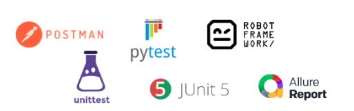

13. 테스트 스위트#
CPython은 코어 인터프리터, 표준 라이브러리, 툴링을 비롯해 리눅스, macOS용 배포까지 포함하는 강력한 테스트 스위트를 가지고 있다.
테스트 스위트는 Lib/tests에 위치해 있고 대부분 파이썬으로 작성되어있다.
전체 테스트 스위트가 파이썬 패키지이기 때문에 컴파일한 파이썬 인터프리터로 테스트를 실행해 볼 수 있다.
용어#
테스트를 처음 접하는 경우 아래의 용어를 알고 있다면 이해하는데 도움이 될 것 같다.
테스트 하네스#
테스트 수행 도구를 의미한다. Postman, unittest, Pytest, JUnit5, Robot Framework 등이 여기에 해당한다.

테스트 스위트, 테스트 케이스#
테스트 케이스의 모음을 테스트 스위트라고 부른다.
확인 테스트, 회귀 테스트#
확인 테스트는 발생한 이슈에 대한 수정 검증 테스트를 의미한다. 만약 확인 테스트가 이후 릴리즈 할 버전에도 영향을 미칠 것 같다고 판단된다면 수행한 확인 테스트 케이스를 회귀 테스트 스위트에 포함시킨다.
회귀 테스트는 테스트 버전에 대해 릴리즈 버전에서 수행한 테스트 케이스들을 다시 수행하는 것을 의미한다.
일반적인 테스트 코드 구조#
일반적으로는 테스트 코드는 다음과 같이 구성되어 있다. (프로젝트 별로 관리 방식이 상이할 수 있다)
pytest를 사용할 경우의 디렉토리 구조이다
Project
|- src
|- __init__.py
|- main.py
|- data_loader
|- ...
|- models
|- ...
|- tests
|- __init__.py
|- test_{suites1}
|- ...
|- test_{suites2}
|- __init__.py
|- conftest.py
|- test_{suite1}.py
|- test_{suite2}.py
Mock#
Mock은 ‘가짜 데이터’를 의미한다. 예를 들어 테스트 코드를 작성할 때, 실제 모듈과 유사하게 동작하는 가짜 데이터를 만들어 사용할 수 있다.
mock를 사용하면 함수의 실제 실행 없이, 미리 정해진 값을 반환하도록 할 수 있다.
성능 저하, 비용 등 불필요한 리소스 발생이 예상될 때, 일반적으로 mock 사용을 권장한다.
# src/example.py
def func():
return "fail"
위와 같은 함수가 있다고 해보자. 원래라면 “fail”만 리턴하는 함수이다.
그리고 테스트를 위한 test_example.py를 만들어보자.
# tests/test_example.py
import unittest
from unittest import mock
from src import example
class TestExample(unittest.TestCase):
@mock.patch("src.example.func", return_value="success")
def test_func(self, mock_func):
actual = example.func()
expected = "success"
self.assertEqual(actual, expected)
if __name__ == "__main__":
unittest.main()
mock를 사용하기 위해서는 test 함수 위에 다음과 같은 데코레이터를 추가해야 한다.
@mock.patch("src.example.func", return_value="success")
patch메소드의 첫 번째 인자는 target 함수의 경로이다.
return_value 인자에는 target 함수의 return 값을 지정할 수 있다.
return_value를 통해 함수의 return 값을 강제할 수 있다.
func() 는 “fail”을 return 하지만,
return_value 파라미터를 통해 “success”로 강제할 수 있다.
Hook#
각 테스트 케이스마다 반복되는 작업이 있을 경우 Hook을 수행할 수 있다.
unittest에서는 테스트 케이스의 설정 및 정리를 위해
setUp, tearDown, setUpClass, tearDownClass 메소드를 사용한다.
setUp: 각 테스트 케이스가 호출되기 전 먼저 호출되는 메소드setUpClass: 테스트 스위트가 실행된 직후 가장 먼저 호출되는 메소드tearDown: 각 테스트 케이스의 종료 후 호출되는 메소드tearDownClass: 테스트 스위트의 종료 후 호출되는 메소드
# tests/test_example.py
import unittest
from unittest import mock
from src import example
class TestExample(unittest.TestCase):
def setUp(self):
self.mock_func = mock.patch("src.example.func", return_value="success").start()
def tearDown(self):
mock.patch.stopall()
def test_func(self):
actual = example.func()
expected = "success"
self.assertEqual(actual, expected)
if __name__ == "__main__":
unittest.main()
리눅스와 macOS에서 테스트 스위트 실행하기#
리눅스와 macOS에서 make로 test 타겟을 실행하면 컴파일 후 테스트가 실행된다.
$ make test
== CPython 3.9
== macOS-14.4.1-arm64-arm-64bit little-endian
== cwd: /Users/wooy0ng/Desktop/cpython/build/test_python_3006æ
== CPU count: 8
== encodings: locale=UTF-8, FS=utf-8
0:00:00 load avg: 5.40 [ 1/425] test_wave passed
0:00:00 load avg: 5.40 [ 2/425] test_richcmp passed
0:00:00 load avg: 7.93 [ 3/425] test_future5 passed
또는 컴파일된 바이너리인 python이나 python.exe로 test 패키지를 실행할 수도 있다.
$ ./python -m test
== CPython 3.9
== macOS-14.4.1-arm64-arm-64bit little-endian
== cwd: /Users/wooy0ng/Desktop/cpython/build/test_python_3006æ
== CPU count: 8
== encodings: locale=UTF-8, FS=utf-8
0:00:00 load avg: 5.20 [ 1/425] test_wave passed
0:00:00 load avg: 5.20 [ 2/425] test_richcmp passed
0:00:00 load avg: 7.68 [ 3/425] test_future5 passed
다음은 cpython에서 테스트를 위한 make 타겟 목록이다.
타깃 |
용도 |
|---|---|
test |
기본적인 회귀 테스트를 실행한다. |
quicktest |
오래 걸리는 테스트를 제외하고 빠른 회귀 테스트만 실행한다. |
testall |
.pyc 파일이 없는 상태로 한 번, 있는 상태로 한 번 전체 테스트 스위트를 실행한다. |
testuniversal |
macOS 유니버셜 빌드에서 여러 아키텍처에 대한 테스트 스위트를 실행한다. |
coverage |
컴파일 후 gcov로 테스트를 실행한다. |
coverage-lcov |
HTML 커버리지 보고를 생성한다. |
테스트 플래그#
GUI가 필요한 IDLE에 대한 테스트처럼 일부 테스트는 특정한 플래그가 없으면 자동으로 건너뛴다.
-list-tests플래그로 구성에서 테스트 스위트 목록을 볼 수 있다.
$ ./python -m test --list-tests
test_grammer
test_opcodes
test_dict
test_builtin
test_exceptions
...
특정 테스트만 실행하기#
테스트를 실행할 때 첫 번째 인자에 실행할 테스트 스위트를 명시해서 특정 테스트만 실행할 수 있다.
아래는 리눅스와 macOS에서 실행할 테스트 스위트를 명시하는 방법이다.
$ ./python -m test test_webbrowser
Raised RLIMIT_NOFILE: 256 -> 1024
0:00:00 load avg: 1.70 Run tests sequentially
0:00:00 load avg: 1.70 [1/1] test_webbrowser
== Tests result: SUCCESS ==
1 test OK.
Total duration: 37 ms
Tests result: SUCCESS
CPython을 변경하려면 테스트 스위트를 사용하는 방법과 직접 컴파일한 바이너리 상태를 확인하는 방법을 이해하는 것이 매우 중요하다.
소스 코드를 변경하기 전에 전체 테스트 세트를 실행하고 모두 통과되는지 확인해야 한다.
테스트 모듈#
C 확장과 파이썬 모듈은 unittest 모듈로 임포트하고 테스트한다.
테스트는 모듈이나 패키지 단위로 구성된다.
예를 들어 파이썬 유니코드 문자열 타입의 테스트는 Lib/test/test_unicode.py에서,
asyncio 패키지의 테스트 패키지는 Lib/test/test_asyncio에서 찾을 수 있다.
아래는 UnicodeTest 클래스 중 일부이다.
class UnicodeTest(string_tests.CommonTest,
string_tests.MixinStrUnicodeUserStringTest,
string_tets.MixinStrUnicodeTest,
unittest.TestCase
):
...
def test_casefold(self):
self.assertEqual('hello'.casefold(), 'hello')
self.assertEqual('hELlo'.casefold(), 'hello')
self.assertEqual('ß'.casefold(), 'ss')
self.assertEqual('fi'.casefold(), 'fi')
이전 장에서 유니코드 문자열에 대해 구현한 ‘거의 같음’ 연산자에 대한 테스트를 UnicodeTest 클래스의 새 메소드로 추가해보자.
def test_almost_equals(self):
self.assertTrue('hello' ~= 'hello')
self.assertTrue('heLlo' ~= 'hello)
self.assertFalse('hELlo!' ~= 'hello')
새로 추가한 테스트를 아래의 커멘드로 실행해보자
Windows
> rc.bat -q -d -x64 test_unicode
MacOS, 리눅스
$ ./python -m test test_unicode -v
테스트 유틸리티#
test.support.script_helper 모듈은
파이썬 런타임 테스트를 사용할 수 있는 helper 함수를 제공한다.
assert_python_ok(*args, **env_vars)지정된 인수와 함께 파이썬 프로세스를 실행하고 반환 코드와 stdout, stderr를 담은 튜플을 반환한다.
assert_python_failure(*args, **env_vars)assert_python_ok()와 비슷하지만 실패를 가정하는 경우에 사용한다.
make_script(script_dir, script_basename, source)script_basename과 source를 사용해 script_dir에 스크립트를 생성하고 스크립트에 대한 경로를 반환한다.
모듈이 빌드되지 않았을 경우 테스트도 건너뛰게 하고 싶다면
유틸리티 함수 test.support.import_module()을 사용할 수 있다.
이 유틸리티는 테스트할 모듈이 빌드되지 않았다면 SkipTest를 발생시켜
이 테스트 패키지를 건너뛰라는 신호를 Test Runner에 보낸다.
import_module()을 사용하는 방법은 아래와 같다.
import test.support
_multiprocessing = test.support.import_module('_multiprocessing')
# test 작성
...